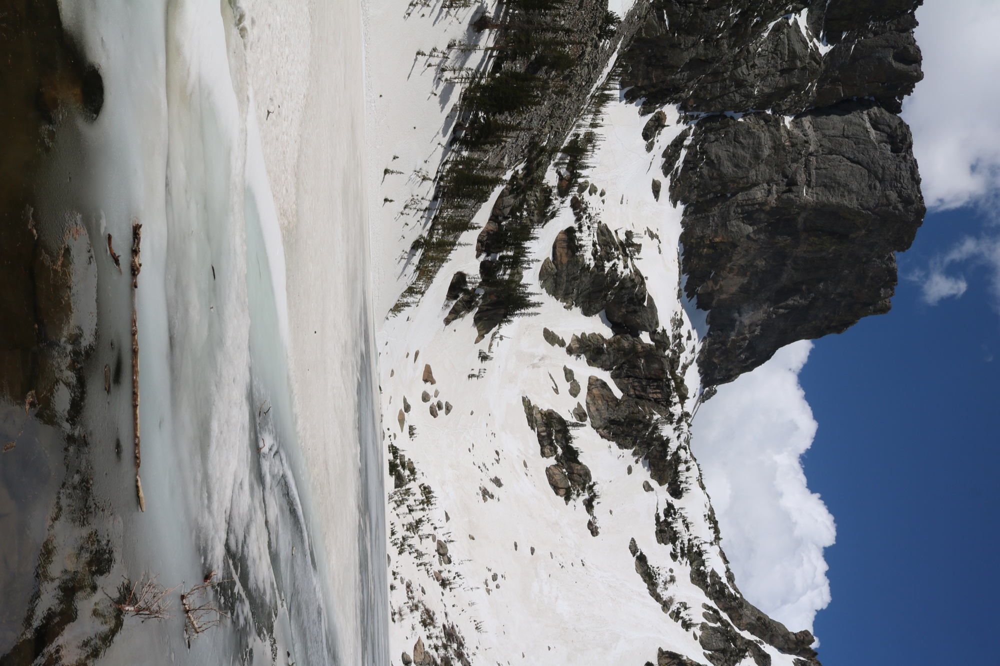

ROCKY MOUNTAIN NATIONAL PARK
Above the tree line
Rocky Mountain National Park protects a broad range of mountain environments, from forested valleys to exposed alpine terrain. This view captures the stark contrast of snow, rock, and open sky. Higher elevation weather can shift quickly, so check conditions and current entry guidance before your visit.
Check Rocky Mountain visit information ↗